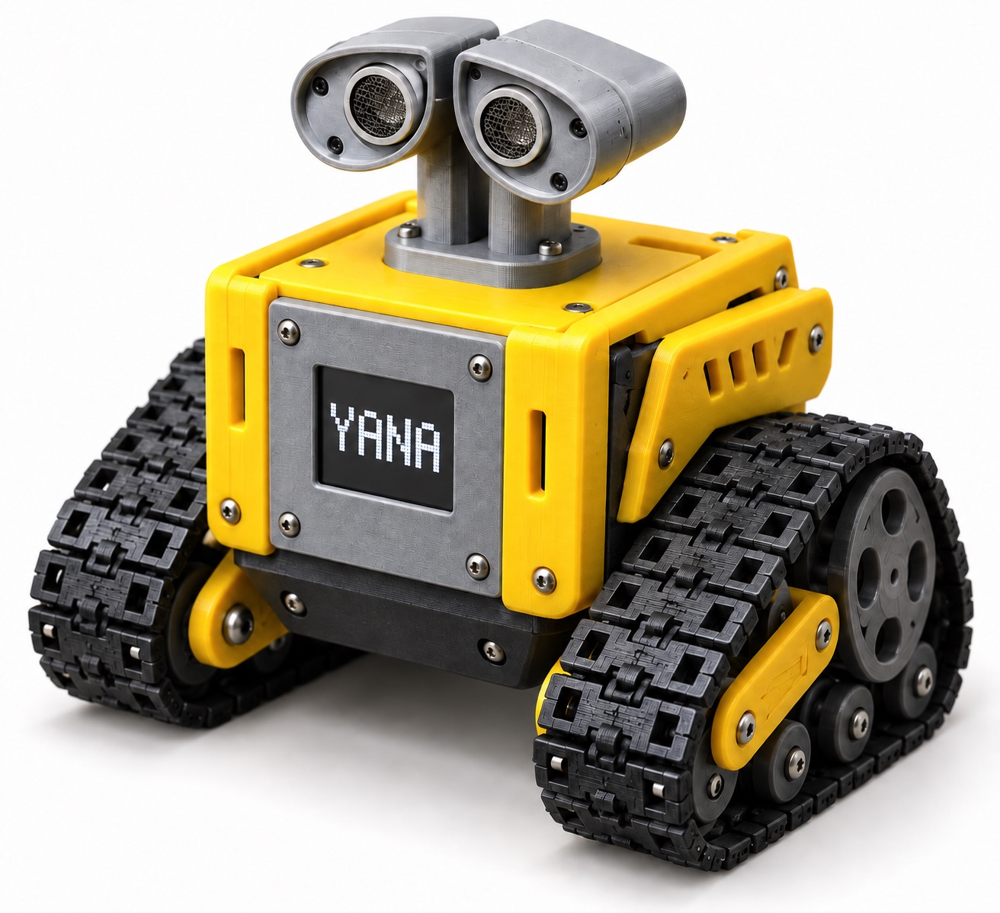
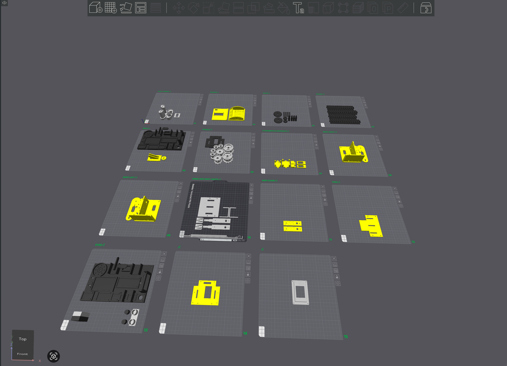

MOTION
Two motor backends
The planned build uses two continuous-rotation servos. Firmware also supports L298N, but that driver is not fitted in this build.
board ESP32-S3
backend servo | L298N
motion differential
safety inhibit latchAI works. You hold authority.
YANA WHEELBOT
The public ESP32-S3 robotics branch of the Yana ecosystem. Its technical repository is the source of truth for hardware, firmware and current status.


Yana customization of KST · build verified, not tested on a physical robot.
MOTION
The planned build uses two continuous-rotation servos. Firmware also supports L298N, but that driver is not fitted in this build.
board ESP32-S3
backend servo | L298N
motion differential
safety inhibit latchSENSORS
VL53L0X by default, with VL6180X as a build option. An unsafe reading blocks the next movement.
range VL53L0X
option VL6180X
touch TTP223
display ST7789 | ST7735LOCAL PROTOCOL
The controller uses JSON-RPC 2.0 initialize, tools/list and tools/call on a trusted LAN.
port 8080
auth token
methods 3
scope trusted LANFIRMWARE / ESP32-S3
Yana firmware customized from KST AI Robot ST7735 + ToF, with Wheelbot control features added. This 9.2 MB image has source/build verification, but has not been flashed or run on a physical robot.
996bb663c6365904f982548ca3e8f22951a2f36215aabd3b2a43d7353ddca8b6ORIGINAL SOURCE / KST
Yana Wheelbot builds on KST AI Robot ST7735 + ToF by Kênh Sáng Tạo. The Yana version adds motion control, LAN/MCP communication and project-specific changes; no physical device has been tested yet. The KST release documents the original hardware configuration, not a Yana hardware test.
Original v1.0.0 firmware for the ESP32-S3 N16R8, ST7735 display and ToF sensor wired to KST’s design. KST’s browser flasher writes its own firmware at offset 0x0; check your hardware before choosing the USB port.
SHA-256 of the original KST firmware5c6f53d884ffbb19081e585d738447d1ea81b0faa848c4a0e9cc9831bc0b41ec3D PRINT KIT / 3MF
Owner-supplied .3mf project containing frame and shell parts arranged in Bambu Studio. Check material, dimensions and printer settings before printing; assembly has not been verified on a physical robot.
0eef91c69f85db5cc9042551549b8ababc1987d820e38f1b5f8164837ae70306HONEST BOUNDARY
Wheelbot is currently source/build verified: it compiles cleanly and its default GPIO mapping is checked against a published reference design. No physical robot has yet been built and run for complete hardware verification.
Local control is token-protected but unencrypted. Never expose port 8080 to the Internet; use a trusted LAN and verify STOP before placing the wheels on the ground.